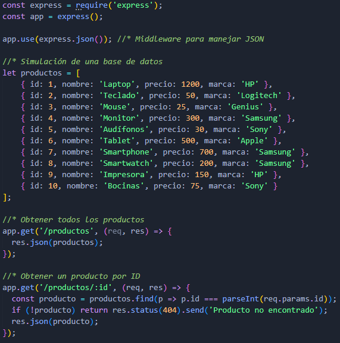
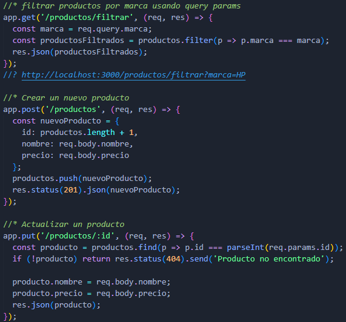
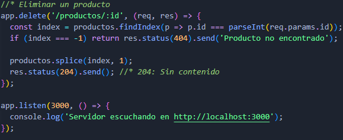

API REST
API REST (Application Programming Interface - Representational State Transfer) es un estilo de arquitectura que permite la comunicación entre sistemas a través del protocolo HTTP. Es ampliamente utilizada para construir servicios web debido a su simplicidad y escalabilidad.
Principios
- Simplicidad:
- Utiliza los métodos HTTP estándar para realizar operaciones sobre los recursos, lo que facilita la comprensión y el mantenimiento de la API.
- Escalabilidad:
- Permite la creación de servicios web escalables y flexibles, ya que los recursos son independientes y pueden ser accedidos de forma concurrente.
- Portabilidad:
- Al utilizar HTTP como protocolo de comunicación, las APIs REST pueden ser consumidas por cualquier cliente que soporte este protocolo, como navegadores web, aplicaciones móviles o servicios en la nube.
- Visibilidad:
- Los recursos son accesibles a través de URLs únicas, lo que facilita la identificación y el acceso a los mismos.
- Fiabilidad:
- Al ser una arquitectura basada en estándares, las API REST son fáciles de implementar y mantener, lo que garantiza su fiabilidad y disponibilidad.
- Fácil de modificar:
- Permite la evolución de la API sin afectar a los clientes existentes, ya que los cambios se realizan en los recursos y no en la interfaz.
Fundamentos
- Recursos:
- En REST, todo es considerado un recurso, representado generalmente por una URL única. Los recursos son las entidades que se pueden manipular a través de la API REST, se acceden mediante los métodos HTTP. Cada recurso puede tener diferentes representaciones, como JSON, XML, o HTML.
- https://api.mitienda.com/productos Representa una colección de productos.
- https://api.mitienda.com/productos/1 Representa un producto específico.
- Métodos HTTP:
- Los métodos HTTP son fundamentales en REST y representan las acciones que se pueden realizar sobre los recursos.
- Representaciones:
- Las representaciones son los formatos en los que se pueden devolver los recursos, como JSON, XML o HTML.
- Estado Sin Estado (Stateless):
- Cada solicitud HTTP contiene toda la información necesaria para procesarla, lo que permite que las solicitudes sean independientes y no requieran información adicional del servidor.
- Interfaz uniforme:
- Simplificar la comunicación entre sistemas.
- Mensajes auto-descriptivos: Cada mensaje debe contener toda la información necesaria para ser procesado.
- HATEOAS (Hypermedia As The Engine Of Application State): Los recursos deben contener enlaces a otros recursos relacionados.
- Protocolo cliente/servidor:
- La arquitectura cliente/servidor permite separar la interfaz de usuario de la lógica del servidor, lo que facilita la escalabilidad y la portabilidad.
Ejemplo API REST


